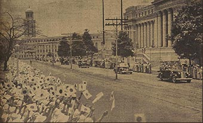

|
j
a v a s c r i p t |
May 6, 1943

Tojo Rides
Tribune: "Premier Tojo Speaks at Luneta Today ... mammoth crowd expected to attend." The Japanese have mastered the art of crowd generation. The wording of instructions for teachers and university students read: "You are ordered and compelled to attend the parade." Atlantic Gulf & Pacific gave staff a holiday with pay — attend the parade or forfeit the pay. Primco even made a roll call in public to check that all its members showed up, and the National Development Company was no less zealous. Well, they got their crowd, but according to Piñol, people were conspicuously silent. Asked to bow, they complied, whispering epithets in Tagalog. The instructions prohibited fans and umbrellas that could presumably conceal weapons; the Constabulary even marched without rifles. Many thought Tojo's speech uninteresting — just the usual flattery and empty promises. Vargas' speech was so thick that no one thinks he wrote it. |
|
|
|
|